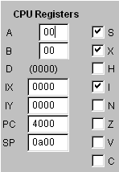

The CPU registers, including the Condition Code Register, can be changed at any time the simulation is not running. Register D, which is A and B concatenated, is displayed but can only be altered by changing registers A or B. Changing the PC value and pressing the Enter key while in that field will cause the CPU instruction queue to be updated immediately, changing the displayed next instruction, and changing the processor mode from WAITING or STOPPED to RUNNING.